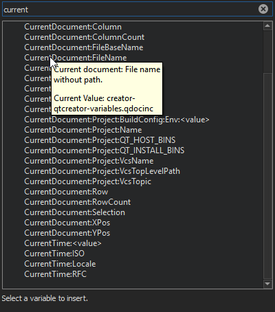

Use Qt Creator variables
You can use Qt Creator variables in Preferences, Build Settings, and Run Settings, in fields that set arguments, executable paths, and working directories, for example. The variables take care of quoting their expansions, so you do not need to put them in quotes.
Select the  (Variables) button in a field to select from a list of variables that are available in a particular context. For more information about each variable, move the cursor over it in the list.
(Variables) button in a field to select from a list of variables that are available in a particular context. For more information about each variable, move the cursor over it in the list.

The following syntax enables you to use environment variables as Qt Creator variables: %{Env:VARNAME}.
Pattern substitution
Qt Creator uses pattern substitution when expanding variable names. To replace the first match of pattern within variable with replacement, use:
%{variable/pattern/replacement}
To replace all matches of pattern within variable with replacement, use:
%{variable//pattern/replacement}
The pattern can be a regular expression and the replacement can have backreferences. For example, if %{variable} is my123var, then %{variable/(..)(\d+)/\2\1} is expanded to 123myvar.
Instead of the forward slash, you can also use the number sign (#) as the substitution character. This can be helpful if the value is supposed to be a file path, in which case forward slashes might get translated to backslashes on Windows hosts.
Use default values
To use the default value if the variable is not set, use:
%{variable:-default}
Examples
The following sections contain examples of using Qt Creator variables.
Current document variables
The %{CurrentDocument} variable expands to information about the file that is currently open in the editor.
For example:
%{CurrentDocument:Project:Name}expands to the name of the project containing the document.%{CurrentDocument:FileName}expands to the name of the document.%{CurrentDocument:FilePath}expands to the full path of the document including the filename.%{CurrentDocument:DirName}expands to the name of the parent directory of the document.
Kit and build configuration variables
The %{Project:DirName} variable expands to the name of the project folder, %{Kit:FileSystemName} expands to information about a build and run kit, and %{BuildConfig:Name} expands to the name of the build configuration.
You can combine them to set the Default build directory in Preferences > Build & Run > Default Build Properties:
../build-%{Project:DirName}-%{Kit:FileSystemName}-%{BuildConfig:Name}

Qt variables
The %{Qt} variable expands to information about a Qt installation.
%{Qt:Version} expands to the version number of a Qt installation. You can use it in kit names.
Device variables
The %{Device} variable expands to information about the device where you run the project (run device).
For example:
%{Device:HostAddress}expands to the host name or IP address of the device from the device configuration. You can use it for SSH authentication.%{Device:PrivateKeyFile}expands to the filename and path of a private key file. You can use it for SSH authentication.%{Device:SshPort}expands to the port number for SSH connections.%{Device:UserName}expands to the username to log into the device. You can use it for custom connections when the device is not connected automatically.
Git variable
%{Git:Config:user.name} expands to the username from the Git configuration. You can use it in license header templates or in any field where you need the Git username.
See also Specify the environment for projects, Configure projects for building, and Configure projects for running.